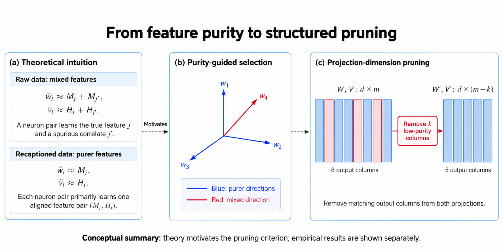

NeurIPS 2025
Contrastive learning with data misalignment
How do imperfect image–text pairs change what a model learns? We connect the training dynamics of jointly trained nonlinear encoders to feature purity and generalization, with experiments on recaptioning and neuron selection.